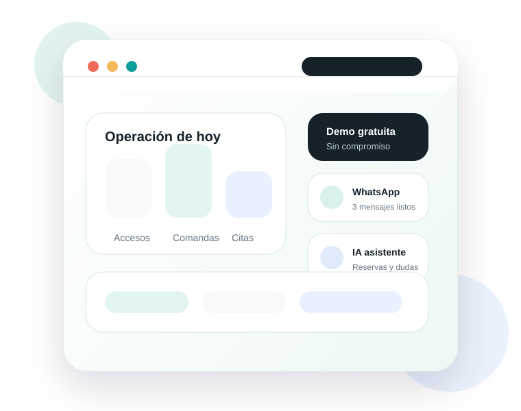

Atención local
Visitas y seguimiento en Querétaro.
Atención local en Querétaro
Demo gratuita y sin compromiso
Pasamos procesos manuales a sistemas sencillos de usar: accesos, visitas, inventario, comandas, citas, asistentes con IA, avisos por WhatsApp y seguimiento diario. Sin complicar la operación.

Visitas y seguimiento en Querétaro.
Soluciones personalizadas y sin suscripciones.
Escuchamos tu problema y te mostramos una demo gratuita sin compromiso.
Te enseñamos a manejar el software a ti y a tu equipo sin complicaciones.
Problemas habituales
Registros en papel, hojas sueltas y tareas que dependen de memoria.
Entradas, salidas y faltantes sin una lectura rápida del estado real.
Visitas y proveedores sin trazabilidad clara ni autorización sencilla.
Demasiadas llamadas, mensajes repetidos y poca visibilidad del avance.
No queda claro quién hizo qué, cuándo ocurrió y qué falta resolver.
Soluciones
Registro de residentes, visitas, proveedores, autorizaciones y reportes.
Entradas, salidas, alertas de mínimos y lectura clara para tiendas.
Pedidos por mesa, cocina, cuentas y operación diaria más ordenada.
Agenda, confirmaciones, recordatorios y seguimiento por WhatsApp.
Atención inicial, consultas frecuentes, reservas y solicitudes repetidas.
Formularios, paneles y flujos sencillos para trabajar con más control.
Sectores
Accesos, visitas, proveedores, avisos y bitácoras con trazabilidad.
Inventario, pedidos, alertas y seguimiento de tareas recurrentes.
Comandas, mesas, cocina, cuentas, reservas y control básico de operación.
Agenda, recordatorios, confirmaciones y atención por WhatsApp.
Control de solicitudes, evidencias, responsables y reportes simples.
Cómo trabajamos
Revisamos el proceso actual, los puntos de fricción y las prioridades reales.
Definimos alcance, fases, herramientas y una ruta de implementación clara.
Configuramos, probamos con el equipo y ajustamos antes de dejarlo en marcha.
Damos seguimiento, resolvemos dudas y mejoramos lo que la operación vaya pidiendo.
Beneficios
Ejemplos
Registro de entradas, autorización por residente y bitácora consultable por administración.
Catálogo simple, mínimos por producto y avisos para evitar faltantes recurrentes.
Pedidos por mesa, avisos a cocina y cuentas más claras durante el servicio.
Confirmaciones por WhatsApp, seguimiento de citas y menos llamadas manuales.
FAQ
El enfoque principal es Querétaro y zona cercana. Para proyectos puntuales se puede valorar una parte remota, siempre que el soporte operativo quede bien cubierto.
Sí. Escuchamos tu problema, revisamos qué proceso quieres ordenar y te mostramos una demo sin compromiso.
Depende del proceso. Una primera versión de control de visitas, comandas, inventario básico o agenda puede quedar planteada en pocos días y crecer por fases.
Sí. Primero se define el flujo real y después se configura la solución para que el equipo pueda usarla sin complicaciones.
Sí. Podemos plantear asistentes o secretarias virtuales para atención inicial, reservas, consultas frecuentes y tareas repetitivas.
Demo gratuita
En una primera conversación podemos detectar qué conviene digitalizar, qué puede esperar y cómo empezar sin interrumpir la operación.
Contacto directo Querétaro, México contacto@digitalizacionqueretaro.com +52 442 600 0092